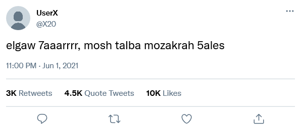

Google uses PageRank to …links
Youtube and Flickr are examples of …service
What is the output of the line of code shown below?
word_stemmer.stem(’running’)
Search engine which takes input from a user and simultaneously send out queries to
third party search engines for results, is …
If a user returns to your site, they will count as a user but not a new user.
News bots are categorized as social bots
Today, more people are getting their news instantly from online news websites, social
media platforms, blogs, among others. News bots has a……………. imitation of human
behavior and a……………. intention.
Select the second name of the Web crawler
Which of the following types applies to the Web crawler?
In …data is analytical friendly
What is the main goal of an influencer bot?
Influencer bots can inflate a brand’s
Over time, influencer bots can lead to
Brands can protect themselves from bots by
If site A has a 47% bounce rate, and another site B that competes with it has
a 60% bounce rate, then ……… can be considered a better page to show in
response to a user’s search query
Students-Teachers relationship is better represented using…………network
For a certain given directed graph
,
where
,
what is the maximum number of edges between the given nodes?
For
,
which Python Function could be used to get the count of
?
Which Python Function could be used to get the degree centrality of a given node?
If Bob visits a.com and clicks a link to your site, he starts a session attributed to
a………… from a.com
For the tweet given below, which type of sentiment scoring is the most suitable to be
applied

The given tweet faces a …challenge while being prepared for analysis
How many opinion elements are obviously included in the given tweet
Which pre-processing step is essential for handling case sensitivity in text
analysis?
lower()method in Question 20 is applicable to the given text in the given
tweet
Justin Bieber is often mentioned in influencer marketing discussions, but some
consider him a “Fake Influencer” along with other celebrities. An analysis revealed
that only 63% of his 168.7 million followers are genuine fans, with an engagement
rate of 0.37%. What is the most likely explanation for the remaining 37% of
followers?
…is the act of incorporating social media content (e.g., a link, video, or
presentation) into a website or blog
If one shared post was: “#PingIt guys this is disappointing :(”, how many
keywords are exposed to the lemmatization process? (treat the :( as an emoji)
Incorrect. Please try again
How many replacements could be made while preprocessing the post given:
“#PingIt guys this is disappointing :(” (treat the :( as an emoji)
Incorrect. Please try again
Reviewers of the PingIt application, all over the world, constructed …network type
Knowing that PingIt is popular on social media doesn’t tell you whether
that’s a good thing or a bad thing. Text analytics tells you